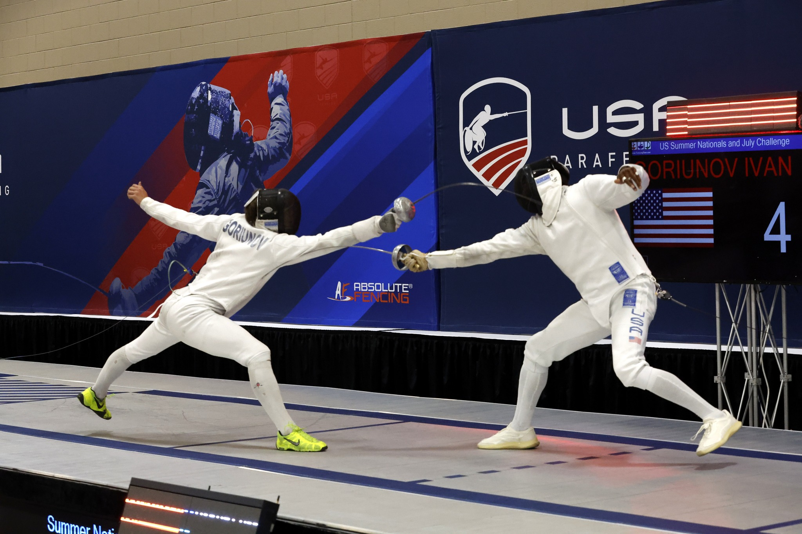

AI-Assisted Valuation Project
Oracle AI Backlog Valuation
DCF Investment Memo
Tap a metric
Implied Value / Share
$52.71
MBA Candidate | Business Analytics | Finance | Operations | NCAA Fencing
I built this site as an extension of my resume: a place to show selected projects, classwork, achievements, and personal interests in more depth. It highlights the analytical work I am learning to do, the professional skills I am building, and the experiences outside the classroom that shape how I approach work.
About
My name is Ivan Goriunov. I am pursuing an MBA at Boston College with a concentration in Business Analytics, after earning a BBA in Economics from Florida Atlantic University.
My background brings together academics, hands-on operations experience, athletics, coaching, languages, and analytical project work. I created this site to show how those experiences connect and to share the work, interests, and projects that do not always fit neatly on a resume.


Projects
A mix of analytical projects, applied operations work, and competitive experiences that show how I approach problems.
AI-Assisted Valuation Project
DCF Investment Memo
Tap a metricOperations & Analytics
Workflow Outcome
Athletics And Leadership

Final bout from my 2023 Division 1A Men's Epee win.
Background
A few academic foundations, practical tools, habits, and interests that sit behind the projects and experiences on this site.
Contact
LinkedIn: Ivan Goriunov on LinkedIn
GitHub: Ivan Goriunov on GitHub